云间日麻0.5.32 · 和牌交接与原版音效
站立手牌先隐藏，再显示倒牌；两种音效直接从提供的雀魂APK导出，游戏内使用同一资源。自家副露下移7像素，保留原大小。截图为实际Unity渲染的合成局面，非安卓真机截图。
和牌横幅原版音效 cutin
开局名牌原版音效 winlose
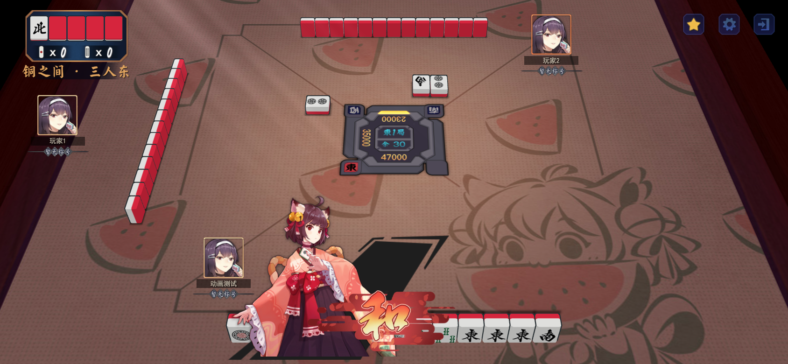
01-ron-after-hide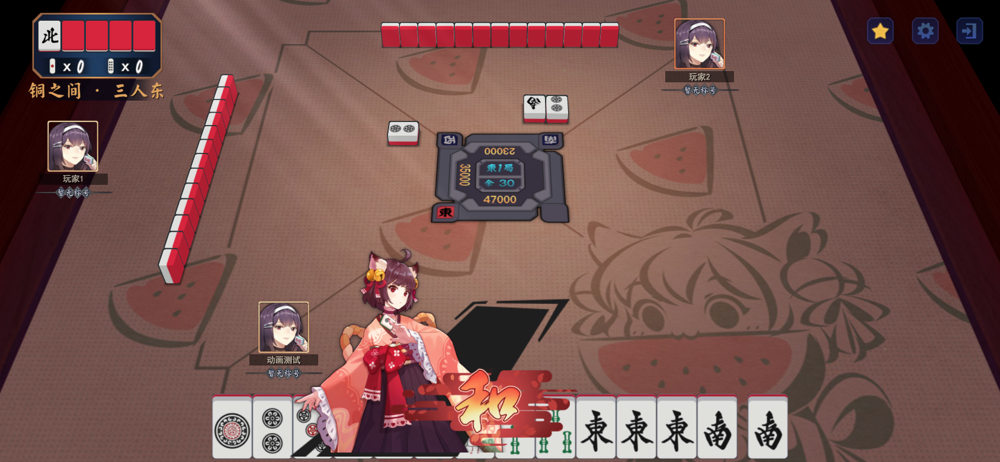
01-ron-before-hide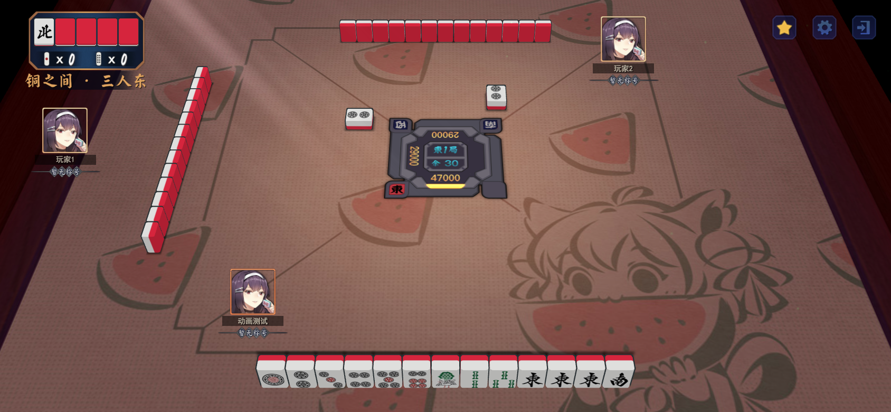
01-tsumo-after-hide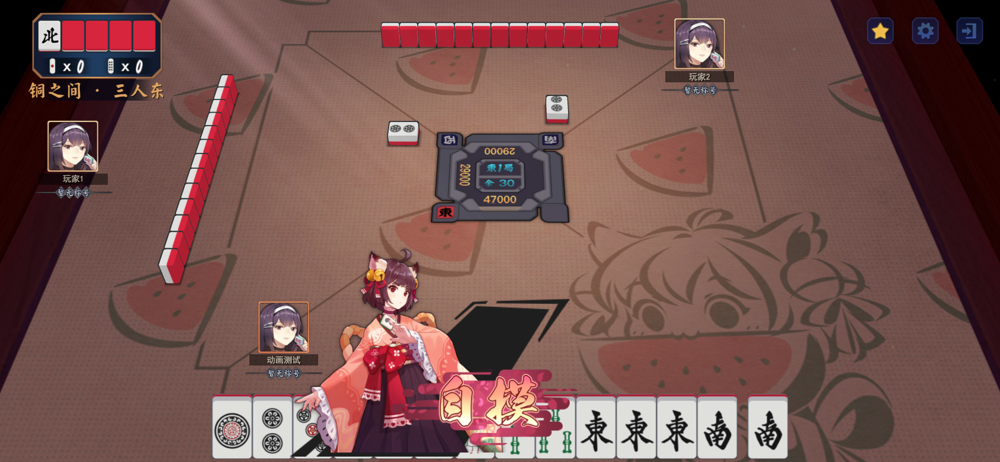
01-tsumo-before-hide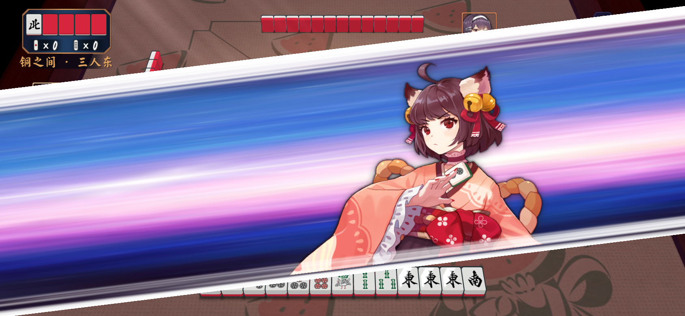
02-ron-cutin-sound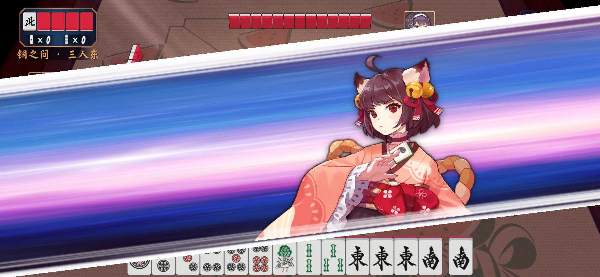
02-tsumo-cutin-sound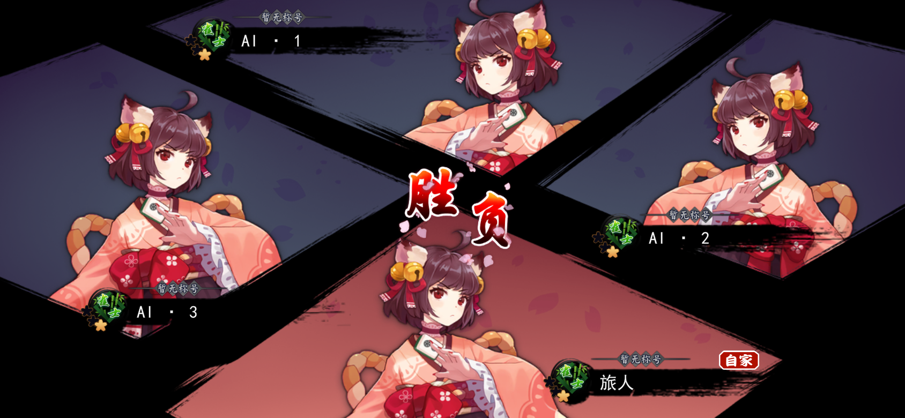
03-intro-sound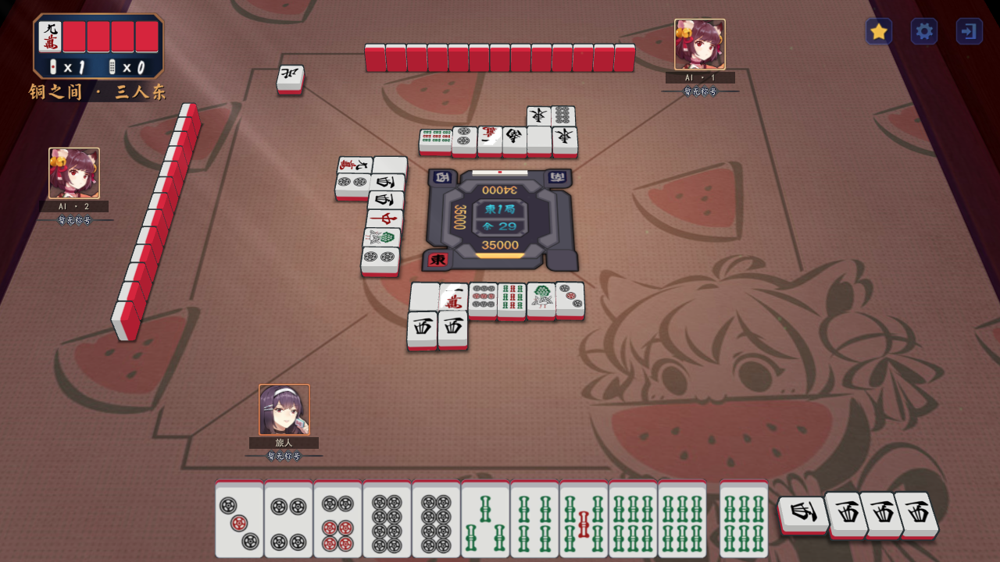
04-after-1280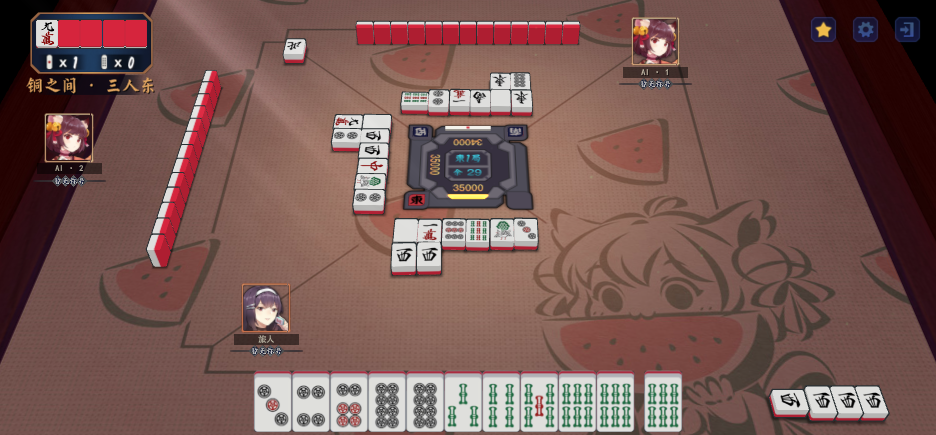
04-after-93604-before-1280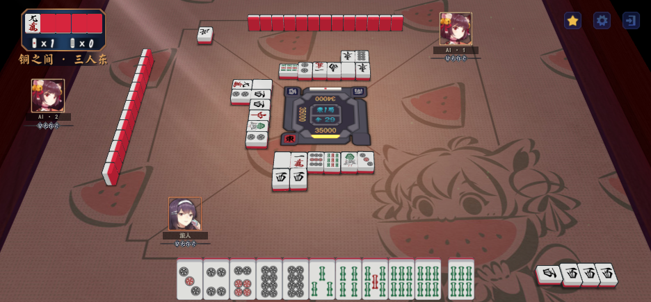
04-before-936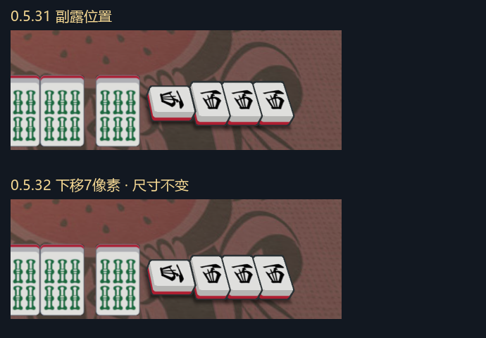
unity-0.5.32-meld-comparison